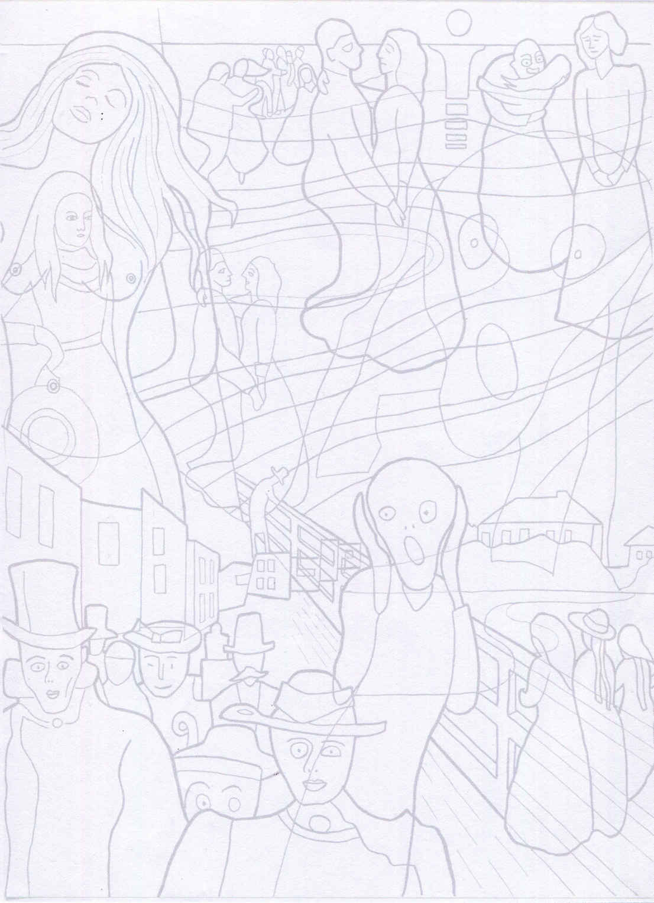

| 『叫び』の画家が撃たれた夜（動画付き）: ストーカー女の一発の銃撃 アーティストラブ | |
| 角間貴生 | |
| (2018) | |
とびら
『叫び』の画家が撃たれた夜（動画付き）
（ストーカー女の一発の銃撃）
アーティストラブ５
まえがき
ノルウェーのハンサム男を自認する、『叫び』の画家エドヴァルト・ムンクは絶えず恋愛に浮名を流しながら、結婚だけは拒否し続けた。
しかしそんなムンクにどこまでも執拗に結婚を迫る強力なストーカー女が現われたのだった。
ある夜、仕掛けられた芝居にまんまと乗せられたムンクはフィヨルド対岸の彼女の家まで舟で出かけた。
彼女の眠る部屋に入ったムンクだったが、放たれた一発の銃撃で彼の左手の指の骨も粉々になった。
そして彼の神経もズタズタになったのだった。
１『叫びの画家』は病気男？
その男の名前はエドヴァルト・ムンク。
自分自身をテーマに神経症的で暗い世紀末風景を描いたノルウェーの画家...。
と言うより、あの『叫び』という有名な絵を描いた画家と言ったほうが、皆様にはすぐ分ってもらえるでしょうか。
たしかに、画家ムンクが描いた作品は、どれも精神病者の「叫び」のようなのです。
だが、不思議なことにそれらの「精神病者の叫び」はどれも絵に力があり傑作が多いのも事実です。
この物語はムンクの画業に重大な転機をもたらしたと言われる、あるドラマティックな恋愛事件を取り上げたお話です。
１８６３年１２月１２日、ムンクはノルウェーの首都から北に約１７０キロメートル離れたリョーテンという町のエンゲルハウゲン農場で生まれた。
父親のクリスチャン・ムンクは軍医で、彼の家系からは学者や高級官僚や芸術家などを輩出している、言わばノルウェーのエリート階級出身者だった。
しかしながら、ムンクの伝記によると父クリスチャンは生まれた時から遺伝性の精神疾患を抱えた極度の神経質人間だったように思われる。
母親のラウラ・カトリーネ・ビョルスタは商家の出身だった。
彼女は若く繊細で美しい女性だったのだが、クリスチャン・ムンクとの結婚当初からすでに結核に冒されている身体だったようだ。
そんな結核の母親ラウラから、エドヴァルト・ムンクは生まれた。
生まれたときはあまりに小さな赤ん坊で半ば半死の状態だったともいう。
...ムンクは生まれた時からすでに体内に結核菌を育んでいた...？
彼はその後の人生でそのように言い続けているが、果たしてそれは本当なのだろうか？
真偽のほどは分からないが、彼自身がいつもそんな脅迫観念を持って、人生を生きることになった事だけは本当だ。
そんな母ラウラはその結核がもとで３０歳の若さで亡くなった。
ムンクが５歳の時だった。
彼は母親についてわずかながらの記憶をいつも心の奥に潜めていたようだ。
「ママは窓のそばで肘掛椅子に座っている。顔色は青ざめ服の色も暗い。窓から差し込む明かりがママを照らす。窓の外には雪が降っている。」
そのショックからなのだろうか、ただでさえ普段から神経症気味の父親クリスチャンがその後、病的な信仰に凝り固まってしまったのだ。
ムンクの言葉を借りれば、「精神までおかしくなってしまった」という事になる。
そして何と、その後、妹のラウラまでもが狂信的な宗教にのめり込んで精神病になってしまった。
そんな呪われたムンク家だったが、またしても不幸が襲った。
ある朝、ムンクの一歳年上の姉ソフィエがやはり結核で亡くなったのだ。
１５歳という若さだった。
ソフィエが亡くなったその日、ムンクは一日中泣き続けた。
そしていつしか...彼は姉の硬直した白い顔と縮れた赤い髪を描き始めていた。
「大きな白い枕にはすべてを諦めたような白い顔があった。
一年前まではあんなにお転婆で生き生きしていた姉だったのに、いま彼女は一体どこに行ってしまったのだろうか...？ きっと喀血を繰り返すぼくの身代わりで姉さんは死んだのだ。」
ムンクは『ぼくの身代わり』を描き続けていた。
このように、ムンク自身も幼いころから母と同じように結核や気管支炎で寝込んだりすることが多かったようだ。
そして父と同じように神経質で激しやすい子供でもあったのだ。
こうしてムンクの結核と精神病との戦いは、子供の頃からすでに始まっていた。
彼は結核による死の恐怖と精神病による狂気に怯えて育っていくことになった。
そして絶えず自分の身体の中を流れる「汚れた血」を呪う事になったのだ。
２『叫びの画家』はハンサム男？
ところで、ムンクは子供の頃から内気で大変恥ずかしがり屋だったようだが、何時のころからか、女にもてるというヘンな自信を持っていた事も事実である。
じっさい彼は背が高く、端正な細面の顔に自信があったし、服装にはいつも大変おしゃれだった。
感情の起伏が大きく、一時でも恋愛をしていないと気が済まないほど情熱的な男でもあった。
こうして、若いころのムンクは絶えず女性を誘惑したり、女性から誘惑されたりしながら、多くの恋愛ごとに夢中になった。
彼には女性なしの生活が考えられなかったのだ。
しかしどんな恋愛でも女性たちが結婚を求め出すと、彼は必ずそれを拒否し、一転して女性たちから逃げ出す男になった。
最後に彼がしゃべる言い訳はいつも決まってこうだった。
「ぼくは自分の身体の中を流れている汚れた血を、これ以上繰り返すわけにはいかない」
こうして結果的に、彼はいつも女性たちをもてあそぶことになったのだ。
じっさい、彼は本当のところ女性たちに優しかったのだろうか？
それともただ女性たちを恐れていただけなのだろうか？
いや女性たちに冷たく残酷なだけだったのだろうか。
とにもかくにも、「ムンクの青春」の一方の光景は女性たちとの熱く悩ましい恋愛の日々だったと言って良いだろう。
そして皮肉なことだけれど...彼がこうして多くの愛や性に没頭し、悩み、苦しんでいた...そんな時代の作品ばかりがどれも傑作というのも事実なのだ。
「ムンクの青春」のもう一方の光景は奔放なボヘミアンとして生きた姿だった。
彼の２０代の頃、ノルウェーでは既成の偽善的な道徳観に反抗して、個性開放や自由恋愛やアナーキズムなどを訴える「ボヘーム運動」が吹き荒れていた。
多くの若い作家たちや芸術家たちがその前衛的な運動に加わって行ったが、ムンクもそんなアーティストの一人だった。
そのグループの中心にいたのが小説家のハンス・イェーガーと画家のクリスチャン・クローグだったが、ムンクはそうした前衛グループの芸術家たちと積極的に交流を深めた。
当時、ノルウェーの首都オスロはクリスティニアと呼ばれていたが、その繁華街カール・ヨハン通りの「グラン・カフェ」が、そんな「ボヘーム運動」のたまり場になっていた。
ムンクは毎晩のように「グラン・カフェ」でアーティストたちと一緒に飲みつぶれ、芸術論議を交わし、時にはモデルの女を漁ったりして過ごした。
この青春時代の「ボヘーム運動」体験がムンクの人生の出発点になったと言って良いだろう。
彼はやがてコペンハーゲンへ、ベルリンへ、そしてパリへと世界各地の放浪を繰り返していく事になるのである。
彼はそんな中にあっても絵の制作だけは着実に進めていた。
そしてあちこちのグループ展や個展で積極的に自分の作品を発表し続けた。
この当時の作品は『病める子供』や『思春期』など「死」や「性」を真正面から取り上げた凄絶な作品が多く、良識ある世間からはいずれも酷評を受けるか無視されるだけに終わった。
だが、一部で彼の作品を評価してくれる人たちもいた。
そうした人たちの一人...美術家協会の画家フリッツ・フォン・ウーデの推薦によって、１８９２年、ムンクの個展がベルリンの建築会館円形ホールで行われる事になった。
しかし開催の当日になって大変な事態が発生した。
肝心の主催者・美術家協会の中で彼の絵をめぐって内紛が起きたのだ。
保守的なメンバーたちから、ムンクの絵は「不潔で下品」と憤りの声があがり紛糾したのだ。
そして展覧会はわずか八日間で無理やり閉鎖されてしまった。
ムンクは落胆した。
そしてその後も相変わらず、彼はほとんど評価されることはなく、そして絵も売れずじまいだった。
この頃のムンクは日々、焦るばかりだった。
何とかして早く世に出たいと焦燥感に駆られる日々だけが続いた。
重苦しい気分を抱えながら昼間でも飲み歩くムンクだったのだ。
３橋の上の『叫び』
そんな憂鬱な日々が続く、ある夕暮れ時の事だった。
ムンクはオースゴールストランの道をひとり歩いていた。
彼はある女と今別れて来たところだったのだ。
そして彼は長いながい桟橋を渡りかけた。
橋の奥には海を眺めている黒服の背の高い紳士が二人見えた。
オレンジ色の大きな夕日が向こうのフィヨルド湾岸の海辺に沈みかけていた。
夕日が海に沈んでゆくにつれ、空全体がみるみるピンク色になり出した。
彼は桟橋の真ん中あたりまで歩いて来ると、なぜか急に気分が悪くなった。
そして橋の手すりにもたれかかった。
女を失ったのだ、愛を失くしたのだ...そんな猛烈な孤独感が彼に襲いかかってきたのだ。
空はいつしか血を流したように真っ赤に染まっていた。
焔のような雲々が次から次へと形を変えながら急速に流れていた。
突然、彼の目の前に見知らぬ女が現れた。
髪のない坊主姿の女だった。
女は橋の真ん中で立ちすくんでいた。
そして狂ったかのように両手で耳を塞いだ。
女が何かを叫んだのだろうか。
それとも空から響き渡ってきた叫びが女の耳に聞こえたのだろうか。
向こうのフィヨルド湾岸では街あかりが黄色く揺れていた。
そして甲高い叫びがその街並みの向こうへと吸い込まれていったように思われた。
見るとムンクの前で女の身体がくねくねとねじれながら回り出した。
まるで骸骨が躍っているようだった。
あまりの恐怖でムンクはその場に倒れ込んだまま、橋の柵に寄りかかって動けなかった。
女は髪がなかったが、間違いなく今日別れたばかりのあの女だったのだ。

翌日、ムンクはこの光景を夢中になって油絵に描いた。
頭の中に残る映像が消えてしまわないうちにと、一心不乱に描いた。
絵筆はカンヴァスの上を激しく動きまわり、絵はあっという間に出来上がった。
彼は完成した作品に『叫び』とタイトルをつけた。
ムンクの『叫び』はやがてあちこちで話題を呼んだ。
話題は広がっていき、いつしかヨーロッパ各地の様々な会場で展示されるようになった。
ムンク３０歳の事だ。
ムンクもようやく世間で少し知られる画家になったのだ。
そんな中で彼は以前にも増して様々な恋愛に執着した。
恋愛は彼が絵を描く原動力になっていたからだ。
しかし、彼はやっぱり女性たちの求婚だけは拒否し続けた。
彼の言い訳は相変わらずこうだった。
「ぼくは自分の身体の中を流れている汚れた血を、これ以上繰り返すわけにはいかない」
４「生命のダンス」
やがて、そんな永すぎた春...ムンクの恋愛の日々にも転機を告げる出来事が起きた。
ある女からとんでもないしっぺ返しを食わされたからだ。
その女性の名前はマティルド・ラルセン。
故郷がムンクと同じノルウェーの女性で、通称トゥラ・ラルセンと呼ばれていた。
ムンクがトゥラ・ラルセンと初めて会ったのは、彼がアンデパンダン展のパリからノルウェーに戻った１８９８年のことだった。
久しぶりに帰郷した街クリスティニアの「グラン・カフェ」で、ハイベルクという男からトゥラを紹介されたのだ。
ハイベルクは舞台俳優を目指したのだが、ギョロ目で容貌があまりに醜く俳優には向かないという理由で作家に転向した男だった。
一方、トゥラは２９歳、その当時にあってはそろそろ婚期も失いかけつつある...そんな年齢だった。
しかし、すらりと背が高く、いつも華やかな帽子に粋で高価な衣服を身にまとって、自分は他の女とは違うのだという「気位」を全身から発散させている女だった。
目は小さく唇も薄かったけれど、赤みがかった豊かな金髪が印象的に見えた。
ただ、彼女はクリスティニアでも有名なワイン商の娘でもあった。
自らもアパートをいくつか所有しているくらいの金持ちだったのだ。
ムンクは当初は彼女の事を好きとも嫌いとも思わなかった。
それなのに、そんな女にやがて振り回されることになったのは、ムンクの方に原因があった。
彼はやがて彼女の肉体に魅了されたのだ。
トゥラは何よりその張った胸と腰のくびれが肉感的だったからだ。
しかし、このトゥラがムンクに大きなインスピレーションをもたらしてくれたのも事実だった。
当時、彼は『生命のダンス』という油彩画をどう描いたらよいか悩み続けていた。
ところが、ある日、そんなムンクに...トゥラがこんな具体的なイメージを授けてくれたのだ。
......ある日、ぼくはその女をモデルにオースゴールストランの浜辺を描いた。
夏至の夜、水平線に沈むのをためらっている白夜の太陽が、はるか海の彼方から太い黄色の光の帯を縦に垂らして、こちらの浜辺まで届いていた。
オースゴールストランの浜辺で、ぼくたちは北国の短い夏を楽しもうと「生命のダンス」に興じていた。
そこには女が三つの異なったドレス姿で立っていた。
画面左には、天使のように初々しい女が真っ白なドレスに身を包んで恋を探していた。
恋を焦がれるような思いつめた目でこちらを見つめていた。
画面中央では、ムンクが真っ赤なドレスの女とまっすぐに向かい見つめ合いながら踊っていた。
彼女の目は黒く縁どられ、長い髪が肩まで下ろされている...そう、彼女はトゥラではなく、ムンクの初恋の女ミリー・タウロウだった。
そして画面右手でも、女がひとり黒いドレスで立っていた。
彼女は苦々しい表情のやつれた姿に変わっていた。
そして薄い唇をかみしめながら空虚の中を突っ立っていた。
女の花の命は短い...あっという間に夏は終わろうとしているのだ。
それは間違いなく年老いたトゥラだった。
女がぼくに結婚を迫った。ぼくは「呪われた血を受け継いでいる...」と答えた。
それでもなお、画面右奥で白髪のギョロ目男が若い女にだらしなく抱きついたまま踊っていた......。
５トゥラが部屋にやって来た
ところで、トゥラが猛然とアタックしてきた日のことをムンクは忘れることが出来ない。
ある晩、彼が散歩をしにアトリエを出ようとしていると、一人の女が階段を駆け上がってくるのが見えた。
それがトゥラだった。
「これから友人の部屋でパーティなのですが、あなたもいらっしゃいませんか」
ムンクは迷ったがパーティに出かけることにした。
その部屋には、すでにたくさんの若者たちが集まっていた。
ムンクが腰かけると、トゥラはすぐに彼の横に座って来た。
やがて、ひたすら飲み食いした彼を、トゥラは別の個室に連れて行った。
その部屋でムンクはトゥラとしばらく他愛無い話をしたようだった。
すると、いつしかトゥラの顔がムンクの顔に近づいてきた。
ムンクは彼女を抱き寄せ、その薄い冷たい唇にキスをした。
トゥラがムンクに絶えず付きまとうようになったのは、これ以降のことなのだ。
ある日、ムンクはひどい風邪をひいたので、熱さまし薬を飲んでベッドに入った。
ところが、その晩、彼はドアをノックする音で起こされたのだ。
トゥラが部屋に入って来た。
ムンクは身体の具合が良くなかったが、ベッドから這い出してきて、壁に寄りかかりながら、彼女とワインを飲み交わした。
案の定、風邪の熱とワインの酔いで、ムンクはしだいに気分が悪くなり、ベッドの上に倒れ込んでしまった。
しかし、トゥラはそんな彼に構うような女ではなかった。
彼女は倒れ込んだムンクの前で奇妙なダンスを踊り続けていた。
トゥラはひとしきり踊ってから「これは『白鳥の湖』なのよ」と言った。
そして「熱のあるあなたって素敵ねぇ...」と付け加えて、無理やり彼に負いかぶさり、キスをしてから部屋を出て行った。
薄い冷たい唇だった。
その夜、ムンクはベッドの中でひどい熱にうなされながら、もがき苦しんだだけだった。
夢の中で、油絵「マドンナ」の中の女が現われてきた。
そしてその女は、トゥラの顔と二重写しになりながら、ムンクの前で妖しい「生命のダンス」を踊り続けていた。
目が覚めてからムンクは一枚のリトグラフを描いた。
裸の妖しい女の周囲に精子が泳いでいる絵だった。
そして隅には怯えた男も描かれた。
その後も、トゥラはやって来た。
ムンクがどこへ旅行する時も彼女は必ずついて来るようになった。
しかし彼はいつも彼女から逃げ出す準備をしていた。
そして本当にコペンハーゲン、ベルリンへと逃げ出したのだ。
それでもなお、トゥラはホテルの部屋まで押しかけてきた。
「これじゃ困るよ。きみは別のホテルを探してくれないと...」
ムンクはトゥラを部屋に置き去りにしたまま街なかへ出かけたのだった。
夜遅くになって彼が部屋に戻ると、トゥラはやはり部屋の中でぽつねんと座っていた。
「私はまだ食事もしていないわ。あなたと一緒でなければ食べる気さえしないのよ。」
トゥラはムンクの前で激しく泣き続けた。
これではさすがのムンクも彼女を追い返すわけにはいかなかった...
彼はその夜トゥラを抱いたのだった。
しかし、一週間もトゥラと部屋で過ごしていると、やっぱり飽き飽きしてしまうムンクなのだ。
ある夕方、ホテルの部屋に戻った彼は語気を強めて彼女に言った。
「トゥラ、やっぱりぼくは一人になりたい。お願いだから、出て行ってくれないか。」
トゥラは目にいっぱい涙を浮かべながら言い返した。
「わたし、今日、血を吐いたのよ。どうもあなたと同じような結核にかかったみたい。わたし、もうすぐ死ぬみたいだわ...」
朝になると、トゥラはハンカチーフに付いた血を彼に見せるのだった。
ヘンだ。こんな血を彼女は一体どこから手に入れたのだろうか？
その血が彼女の肺から出たものでない事だけは確かだったのだが...
ムンクはトゥラに提案した。
「もっと暖かいところへ移ろうよ。調べてみると、フィレンツェはニースと同じ緯度なのだよ。暖かいフィレンツェに行けばきっと、君の胸の病気も良くなると思うよ。ぼくもフレスコ画の勉強ができるしね」
しかし、いざ二人でフィレンツェに行ってみると、南の陽光どころか、ものすごい寒さだった。
ムンクはまたひどい風邪をひいて、寝たきりのまま今度は全く動けなくなってしまった。
全く動けなくなったムンクを前にして、トゥラは急に冷たい女に変身した。
「わたし、やっぱりパリに行くわ。これで二人お別れかもね...」
６逃避行の果てに
やがてパリのトゥラからムンクに手紙が届いた。
「あなたはなぜハイベルクを毛嫌いするのかしら。あの人は話も面白くて楽しい人だわ...」
ムンクは苦笑するだけだった。
どうやらトゥラはあの白髪のギョロ目男、ハイベルクの彼女になったのかも知れない。
これでようやくぼくはあの女と別れることが出来る...ムンクはほっと胸をなでおろしたのだった。
すると、彼の病気はたちまちのうちに回復した。
ムンクはひとりローマを旅し色々な建築物を見学して回ることにしたのだった。
イタリアの美術研究が彼の長年の念願でもあったからだ。
そうしてムンクは久しぶりのパリに戻った。
彼がホテルの部屋でくつろいでいると、その日の夕方、トゥラが満面の笑顔でやって来た。
あのフィレンツェでの別れ話など、何もなかったかのような口ぶりだった。
そしてまた、トゥラの方から攻勢をかけてきたのだ。
「わたし、本格的にあなたにお金の援助をしてあげようと決めたのよ。借金の肩代わりだっていいわ。」
子供の頃から何不自由もなく育ったトゥラは、ぼくをお金の力で完全に支配しようと考えたのかもしれない。
彼女はもう妻の役割まで演じているつもりだった。
ムンクの方は、これまで何かと彼女から援助を受けてきたせいもあって、どうにも返事が返せないままだった。
彼はこれからも彼女からお金の援助だけは得ながら、結婚の要求だけは逃げ通せる...と考えたのだ。
それはムンクの甘い算段だった。
.................................
ムンクのヨーロッパ大陸の長旅が始まった。
トゥラからの逃避行のつもりだったが、やっぱり彼女はどこまでもついてきた。
そしてムンクが泊まったホテルの近くから、彼女はいつも電話攻勢をかけてくるのだった。
ある夜の事だった。
「もう会わない」と言い続けてきたはずのムンクだったが、ホテルの部屋でひとり天井を見つめていて、なぜか無性に淋しい気持ちに襲われたのだ。
そしてついつい結婚をほのめかすような曖昧な手紙をトゥラに書いてしまった。
彼の方では結婚を否定した文面のつもりだったが、彼女は逆に受け取ったようだ。
トゥラからこんな返事が返ってきた。
「そう...あなたもやはり淋しいのよ...あなたには絶対わたしが必要なのだわ。」
ムンクのためにこれまで多額のお金をはたいてきたトゥラが、もう引き下がるはずはなかった。
どの旅先でも昼夜構わず、彼女はムンクの部屋に押しかけてきた。
ムンクはとうとう彼女から完全に逃れなくなったのだ。
やがて、彼は激しい不安に襲われ、また酒浸りになってしまった。
そして究極の手段として、知り合いの療養所に逃げ込んだのだった。
「片方の肺が弱っている。結核の初期症状だから、しばらく安静が必要だ」
友人の医師のこんな診断でムンクは療養所に晴れて入院する事が出来た。
こうしてムンクはトゥラから逃れる事に成功した。
そして彼女をベルリンまで追い出すことにも成功したのだった。
「ぼくの身体がこんな状態なのだから、きみの方はしばらく版画でも習うためにベルリンに行ってなさい」
しかし、まもなくベルリンからトゥラはこんな泣き言を書いてきた。
「あなたのせいだわ。この見知らぬ大都会で、わたしは独りぼっちのクリスマスを送るはめになってしまったのよ」
..............................
トゥラがいない間に、ムンクは借金の肩代わりになってくれる人を探し続けた。
すると、友人のオラフ・スカウが彼の借金全部の肩代わりをすると言ってくれたのだ。
ようやく、ムンクはトゥラから経済的にも自立することができることになった。
「ぼくは恋か絵のどちらかを選ばねばならない。君はまだぼくがどんな人間か分かっていないのだよ。絵を描いているぼくは別人になってしまうのだから...」
「ぼくは呪われた血を受け継いでいる。ぼくたちが子どもを作ることは君を絶対に不幸にするだけなのだよ」
トゥラはようやく愛情でもお金でも、ムンクを支配出来なくなったことを知ったのだ。
ムンクにもう会えないことを覚悟したトゥラは本当に彼を諦めたのだろうか。
しかし、ムンクにはまだ嫌な予感が残っていた。
やがてその予感は的中した。
しばらくして、トゥラがムンクの絵をあちこちで買いあさっている...という噂を耳にしたからだ。
７一発の銃声がベッドの上で...
ある日の事だった。
トゥラの取り巻きの一人...セシリーという女が、突然、ムンクの家の裏庭に現れた。
赤褐色の髪を持った小柄な女だった。
「あなたがいつまで経ってもトゥラのところに来てくれないので、彼女は淋しさに耐えられず、おかしくなってしまったみたいなのよ。」
「今日、彼女は本当に自殺しようとしているの。彼女はモルヒネの瓶を空にして、『もう、わたしはこれでおしまいよ...』と叫んでいるわ。あなたは彼女をあのままにしていいの。トゥラを救えるのはあなたしかいないのよ。お願いだから、来てちょうだい。本当に今すぐ来てちょうだい」
..............................
ムンクはフィヨルド対岸の彼女の家まで舟に乗ることにした。
まだ薄明るい白夜の空には雲が様々に形を変えながら激しく流れていた。
幾つかの島々が浮かぶ青黒い海の向こうにはフィヨルドの長々とした陸地の線がうねり続けていた。
家の前に到着すると、黄色く灯る窓の中で男や女たちのたくさんの影が行ったり来たりしているのが見えた。
ムンクが部屋の中に入るやいな、彼らの視線が一斉に彼の身体全体に注がれたのだった。
どれも非難に満ち満ちた厳しい視線だった。
そして、彼はただちにトゥラの寝室まで案内された。
ベッドの中で彼女は身動きひとつしないまま寝ていた。
やがてみんなが引き上げると、ムンクとトゥラの二人だけが部屋に残されることになった。
すると、さっきまでの喧騒が嘘のように部屋は静まり返った。
部屋の白壁の上にはローソクのほのかな影がちらちら揺らめいている。
窓ガラスの向こうを見るとフィヨルドの深い海が青黒く光りながら沈んでいた。
そしてベッドの中は死んだようなトゥラの寝顔が白く浮かび上がって見えていた。
どれくらい時間が経ったのだろうか。
突然、眠っていたはずのトゥラがベッドの上で身を起こした。
布団から上半身だけ出して、金髪の長い髪を振り乱しながら泣き叫んだ。
「なんで、あんたはこんなに私を苦しめるのよ。私が毎日どんなに淋しい思いをしてきたか、あんたには分からないのだわ。私は今日こそ決めたの。あんたの前で死んでみせるわ」
そう言ってから、トゥラは突然、枕元に隠してあったものへと長い手をさっと伸ばしたのだ。
見ると彼女の右手がもう何かをつかもうとしているではないか。
黒い重たそうな銃だった。
そうして、その銃をつかむやいな、それを自分の耳に押し当てようとした。
びっくりしたムンクはあわててベッドのトゥラの身体の上へと飛び込んだ。
そして負いかぶさったまま、トゥラの腕をつかんで彼女の銃に手を伸ばそうとした。
何とかして彼女の手から銃身を取り上げようと必死だった。
そのまま、銃身を取り上げようとするムンクの手と抵抗するトゥラの手がベッドの上で激しくもみ合った。
そうこうしているうちに、どちらかの指が引き金を引いたようだ。
突如、部屋全体を揺るがすような大きな銃声が轟いた。
部屋全体には真っ黒な煙が立ち込めた。
ムンクは「ぎゃー」とものすごい叫び声をあげた。
トゥラはベッドから仰向けに床に転げ落ちたようだった。
ムンクの手から猛烈な血が噴き出した。
どうやら左手中指あたりからの血だった。
彼は真っ青になって右手で左手を包もうとしたが、あふれ出す血が指の間から次から次へと滴り出していた。
ムンクはトゥラに大至急、医者を呼ぶよう叫んだのだった。
８銃撃事件の後、ムンクは...
ムンクは手術室で担当医から指のレントゲン写真を見せられた。
弾丸は中指の中で破裂していて、砕けた骨の小さなかけらが散らばっていた。
弾丸と骨の破片を取り出す手術が何時間も続いた。
手術が終わった時、ムンクの指は野球グローブのそれのように腫れ上がっていた。
この銃撃で、彼の神経はズタズタになったようだった。
事件のあと、ムンクは精神不安で長らく入院することになったのだ。
しかし不思議なことだが、病気から回復するとムンクはなぜかすべてがふっ切れたように健康になったのだった。
あの銃撃が彼の中に溜まりに溜まった偏執的な腫瘍を洗い流してくれたのだろうか。
いや、あの銃撃事件の後、トゥラがムンクを完全に諦めてくれた事が本当の原因だったのかもしれない。
彼女はあれ以降、ムンクに「貸した」お金の返済を求め続けるだけだった...。
いずれにしろ、この後、あんなに彼を悩ませた女たちへの幻想も妄執もムンクの心からだんだんと薄らいでいくようだった。
そうして...幼き日から抱いてきた死や狂気への偏執的な怖れも同じように和らいでいったのだ。
彼はこれまでのように周囲の男や女たちと、無駄ないさかいや争いさえしなくなった。
もちろん、彼はやがて国際的な画家になっていったのだから、そんな諍いの必要もなくなったのだ。
どんな絵でもすぐに売れるし作品の依頼だって常にやって来るようになっていたのだから。
しかしあの事件の後、ムンクの絵が力強さを失い、荒く薄っぺらなものになってしまったのも事実だった。
死と狂気のパラノイアを失ったムンクの絵はどれも凡庸なものにしか見えなかった。
一発の銃撃がムンクの指も恋も粉々にしたと同時に、ムンクの才能も粉々にしたのだろうか。
彼の精神が健康になったと同時に、彼は傑作を描けなくなったのだ。
半病人で半狂人だったはずのムンクは、その後、『叫び』の仮面で自らの顔をひた隠しながら、ただ長々と生き続けることになった。
１４歳で姉ソフィアと同時に死ぬ運命のムンクだったが...
..............................
ここに一枚の油絵がある。
どこも薄塗りの絵の具で描かれた黄色い部屋に、一人の痩せこけた老人がよれよれの黒い背広姿で突っ立っている。
窪んだ目の下は薄い唇を真一文字に引き結んでいる。
それはすでに名誉もお金も手にした大画家の顔だった。
どんな荒っぽい絵でも高値で売れる大画家の顔だった。
しかしそれは女たちへの幻想や妄執を失くした「幸せな」画家の顔でもあった。
死や狂気への偏執な怖れも失くした「幸せな」画家の顔でもあった。
いや、もう傑作を描けなくなった「不幸せな」画家の顔でもあった。
そしてそれは『叫び』の仮面でだらだら長生きをした...
ひとりの孤独な男の顔だった。
...この小説はフィクションです...
私のアニメーションをどうぞ
ここで時間のある方は私が作ったアニメーション「橋の上の『叫び』大会」を下記のVIMEOかYouTubeのサイトでご覧ください。上映時間は２分３１秒です。
なお、VIMEOもYouTubeもダウンロードされていない場合は、どちらかをダウンロードしてご覧ください。
もちろん、ダウンロードも私のアニメーションを見るのも無料です。
何通りも作れる「線画ぬりえ」（ムンク編）
これは「ムンク線画元絵」です。後ページ「創作線画サンプル」を参考に、あなた自身の「線画ぬりえ作品」を作って下さい。

「創作線画サンプル」①
「創作線画サンプル」②
後付
『叫び』の画家が撃たれた夜（動画付き）
（ストーカー女の一発の銃撃）
―アーティストラブ５―
発行 2018年10月23 日 第１版発行
著者 角間貴生（かくまたかお）
Copyright Takao Kakuma 2018
発行所 出版工房ゆめらいふ
〒811-1346 福岡県福岡市南区老司５－５－２０
Web: https://artwonderlandyumelife.jimdo.com/
Eメール： yumelife@outlook.jp